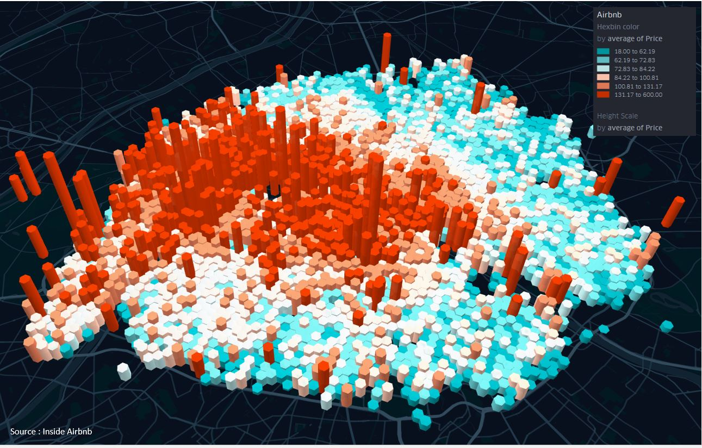

GeoViz avec Kepler.gl
Cette section centralise une série de géovisualisations de données réalisées avec l'application Kepler.gl
Une semaine de covoiturage BlaBlaCar à Nantes

Géovisualisation d'un MNT haute précision en vectoriel

Extrusion du nombre de transactions foncières en et agrégation des prix moyens en 2017

Carte en points (dotmap) des mesure de cell ID des antennes de téléphonie mobile
Vitesses de l'Internet Mobile en europe
Grille de population (10km) extrudées en 3D (GHSL)
Expérimentation cartographique sur données carroyées à Paris
Extrusion du nombre de transactions foncières en 2018 en Bretagne et agrégation des prix en 2018
Extrusion du nombre d'entreprises de la base SIRENE dans des mailles de 200m
Résultats de la liste RN aux élections européennes 2019 dans des mailles de 5km
Agrégation des prix au m² des ventes d'appartements à Paris en 2017
Densité de Airbnb à Paris (maillage)
Extrusion du prix moyen des airbnb à Paris

Extrusion du nombre de signalements de l'application "Dans ma rue" dans des mailles de 200m
Utilisations des bornes WIFI de la Ville de Paris par langue des utilisateurs
Arcs des origines/destinations des covoiturages BlaBlaCar à destination de Rennes sur 5 mois

Mobilités professionnelles des 5 plus grandes villes d'Ille et Vilaine
Trajets de covoiturage pendulaire issus du registre de preuve de covoiturage
Trajets BlaBlaCar au départ et à destination de quelques grandes villes le 24 août 2018
Trajets BlaBlaCar au départ et à destination de quelques grandes villes le 24 août 2018
Tx de pauvreté et nb de personnes bénéficiants d'aides sociales par IRIS
Part du secteur tertiaire dans la consommation électrique par IRIS
Jouer avec les niveaux d'agrégation spatiale de la population carroyées

Jouer avec les niveaux d'agrégation spatiale des Airbnb à Paris